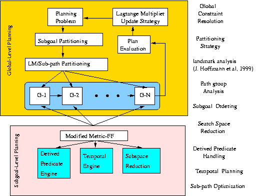

SGPlan:
Subgoal Partitioning and Resolution in Planning
·
1st Prize,
Suboptimal Temporal Metric Track
·
2nd Prize,
Suboptimal Propositional Track
Summary of Competition Results (June, 2004)
|
|
SGPlan
|
LPG-TD
|
Downward
|
Diagonally
|
Macro-FF
|
YAHSP
|
Crikey
|
|
Propositional Domains (1st / 2nd Places)
|
4 / 6
|
1 / 6
|
6 / 1
|
7 / 2
|
3 / 0
|
4 / 2
|
0 / 1
|
|
Temporal/Metric Domains (1st / 2nd Places)
|
13 / 0
|
9 / 4
|
|
|
|
|
|
|
Total Count (1st / 2nd Places)
|
17 / 6
|
10 / 10
|
6 / 1
|
7 / 2
|
3 / 0
|
4 / 2
|
0 / 1
|
The binary file (June 2004 Linux version compiled using gcc version 3.2.3
on Redhat Enterprise Linux 3 and with static linking option) of SGPlan is
available for download.
Instructions for running SGPlan:
- Download
- Version 4.0
(June 2004 version used in IPC4, with PERT scheduling in benchmarks with TIL and deadlines),
- Version 4.1
(August 2006 version used in our JAIR2006 paper, with PERT scheduling in all benchmarks).
- Version 4.2
(August 2006 version used in our JAIR2006 paper, with PERT scheduling in all benchmarks and a new version of FF).
- Uncompress the downloaded file
in the current directory by running
unzip
This will create three files in the current
directory: sgplan, p01-domain.pddl, and p01-s2-n1-l2-f50.pddl.
- Run sgplan:
Usage: sgplan
-o operator_file_name -f fact_file_name
[-out solution_file_name] [-cputime seconds]
where the output will go to the standard output if the "-out solution_file_name" option is not specified,
and the maximum CPU time (in seconds) allowed will be enforeced if the "-cputime seconds" option is specified.
For example: sgplan -o p01-domain.pddl -f
p01-s2-n1-l2-f50.pddl -out p01.soln -cputime 20
For more testing domains, try sgplan
on the IPC-3
and IPC-4
benchmark suites.
The SGPlan
Planner (extended
abstract)
SGPlan partitions
a large planning problem into subproblems, each with its own subgoal, and
resolves inconsistent solutions of subgoals using our extended saddle-point
condition. Subgoal partitioning is effective because each partitioned
subproblem involves a substantially smaller number of constraints (and
exponentially smaller complexity) than that of the original problem. We have
developed methods for the detection of reasonable orders among subgoals, a
landmarks analysis to hierarchically decompose each subproblem, a
search-space-reduction algorithm to eliminate irrelevant actions in
subproblems, and a strategy to call the best planner to solve each bottom-level
subproblem. Our current implementation of SGPlan
uses a modified Metric-FF
planner for basic planning and only invokes LPG (2003 version) when the modified
planner fails.
The Architecture of SGPlan

References:
- B. W. Wah and Y. Chen, Constraint
Partitioning in Penalty Formulations for Solving Temporal Planning
Problems, Artificial Intelligence, Elsevier, vol. 170, no. 3, pp.
187-231, 2006.
- Y. X. Chen, B. W. Wah, and C.
W. Hsu, Temporal
Planning using Subgoal Partitioning and Resolution in SGPlan, J. of Artificial Intelligence Research,
vol. 26, Aug. 2006, pp. 323-369.
- B. W. Wah and Y. Chen, Subgoal
Partitioning and Global Search for Solving Temporal Planning Problems in
Mixed Space, Int'l J. of Artificial Intelligence Tools, World
Scientific Publishing Co. Pte. Ltd., vol. 13, no. 4, Dec. 2004, pp.
767-790.
- Y. Chen and B. W. Wah, Automated
Planning and Scheduling using Calculus of Variations in Discrete Space,
Proc. of Int’l Conf. on Automated Planning and Scheduling,
2003, pp. 2-11.
- B. W. Wah and Y. Chen, Partitioning of
Temporal Planning Problems in Mixed Space using the Theory of Extended
Saddle Points, Proc. 15th IEEE Int’l Conf. on Tools with
Artificial Intelligence, 2003, pp. 266-273.
- C. W. Hsu, Y. X. Chen, and B. W. Wah, Subgoal Ordering and
Granularity Control for Incremental Planning, Int'l J. of Artificial Intelligence Tools,
World Scientific Publishing Co. Pte. Ltd., 2006 (accepted to appear).
- Y. Chen, C. W. Hsu, and B. W.
Wah, System
Demonstration: Subgoal Partitioning and Resolution in SGPlan, System
Demonstration Session, Int'l Conf. on Automated Planning and Scheduling,
AAAI, June 2005, pp. 32-35.
- J. Koehler, J. Hoffmann, On
Reasonable and Forced Goal Orderings and their Use in an Agenda-Driven
Planning Algorithm, Journal of Artificial Intelligence Research,
Volume 12, 2000, pp. 338-386.
- J. Porteous, L. Sebastia, J.
Hoffmann, On
the Extraction, Ordering, and Usage of Landmarks in Planning, Proc.
6th European Conf. on Planning, 2001, pp. 37-48.
Acknowledgments:
Research supported by National Science Foundation Grant IIS
03-12084 and National Aeronautics and Space Administration Grant NCC 2-1230.